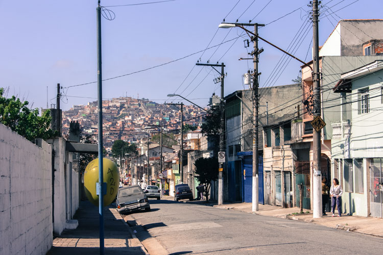

Dissertation research aiming to describe the deep relationship between architecture and anthropology throught the example of the informal settlements in Brazil, the “favelas”: in this chaotic appearance, we find order and coherence.

“My journey in Brazil and in the world of the favelas led me to the conclusion that it is a complicated universe and that we will never fully understand its dynamics. Nevertheless, the energy and hope these people transmitted helped me consolidating the idea for a possible better future. My dissertation wants to be a positive voice that shows the capacity of the inhabitants of favelas to build something coherent and useful, despite careless policies and the violence these places represent. Through a historical excursus I will examine the actions taken by the governments and architects that worked on the so called “informal settlements”. Several failures, shown in this paper, will lead to the conclusion that it is not possible to create a good urban solution, for such a controversial situation, without fully understanding its population and their needs. In an architectural scenario, the anthropological view should play an important role. It is time to combine the art of architecture with other disciplines and to push them to their extremes. In order to achieve it, a good start is by collaborating with the population that will beneficiate from it; to build something beautiful shaped on their beliefs and routines, rather than on standard ones. Finally, to look at the favelas as something to develop by celebrating their identities and their community, and not as a problem to demolish.”